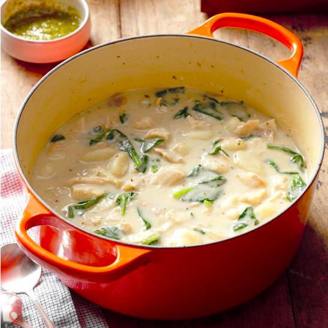

Chicken & Gnocchi Soup

Servings: 5 bowls
Directions
- Melt butter into EVOO in a large saucepan over medium heat
- Add onion, celery, garlic & cook
- Whisk in flour and cook 1 min
- Whisk in half and half and simmer until thickened
- Stir in 1/2 tsp salt, thyme, parsley, carrots, spinach, chick & gnocchi
- Simmer until heated through
Ingredients
- 4 Tbs butter
- 1 Tbs Extra Virgin Olive Oil (EVOO)
- 1 cup diced onion
- 1/2 cup celery (diced)
- 1/4 cup flour
- 1 quart half & half
- 32 ounces chicken broth
- salt
- 1/2 tsp thyme
- 1/2 tsp parsely
- 1 cup shredded carrots
- 1 cup spinach leaves, chopped
- rotisserie chciken
- 1 package (16 oz) gnocchi